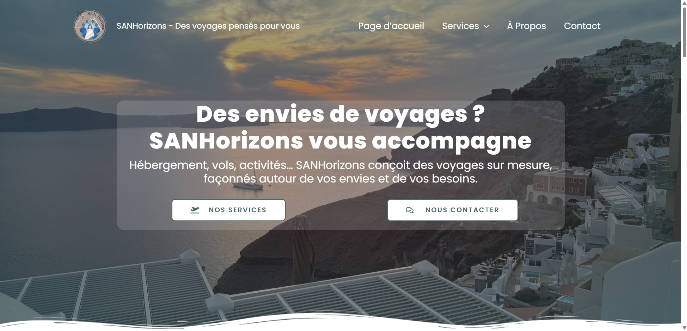
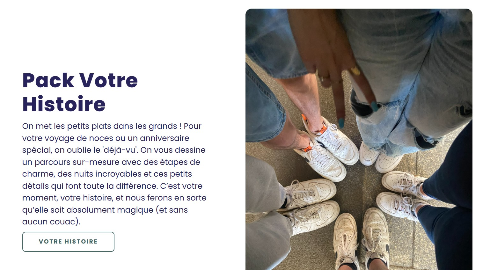

SAN Horizons
Agence de voyages sur mesure. J'y suis responsable communication et design : l'identité visuelle, le site, les formulaires de devis et la présence en ligne passent par moi.
Le poste Responsable communication et design
SAN Horizons construit des voyages sur mesure. Le sujet n'a rien à voir avec le BTP, et c'est précisément pour ça que le poste m'a intéressé : tout ce que je fais par plaisir depuis des années, le dessin, la mise en page et le code, y devient un travail avec des objectifs et des délais.
Je suis responsable de l'identité visuelle, du site et de la présence en ligne. Concrètement, je décide de ce à quoi ressemble la marque et je le fabrique moi-même, du logo jusqu'au formulaire de devis.
Ce que je fais Missions
- Identité visuelle. Choix typographiques, palette, déclinaisons pour le web et les réseaux, gabarits réutilisables pour les publications.
- Site complet sous WordPress et Elementor. Arborescence, mise en page de toutes les pages, responsive, optimisation des images et des temps de chargement.
- Formulaires de devis à logique conditionnelle. Le visiteur ne voit que les questions qui le concernent : les champs apparaissent selon la destination, le type de séjour et le nombre de voyageurs. Développé avec WPForms, complété en PHP et JavaScript quand l'extension ne suffisait pas.
- Composants sur mesure. Cartes de présentation de l'équipe écrites directement en HTML et CSS, jeu d'icônes SVG du pied de page, corrections d'affichage que le constructeur de pages ne permettait pas.
- Communication. Ligne éditoriale, visuels des publications et cohérence entre le site et les réseaux sociaux.
Images illustrations


Bilan Ce que ça m'apporte
Travailler pour une marque oblige à sortir de ses goûts personnels et à servir un public. C'est un exercice que je retrouve exactement en BIM : produire quelque chose qui doit être compris par quelqu'un d'autre, pas seulement par soi.
Ce que j'en retiens
Un site n'est pas un rendu, c'est un outil. La question n'est jamais « est-ce que c'est beau » mais « est-ce que le visiteur arrive au bout du formulaire ».